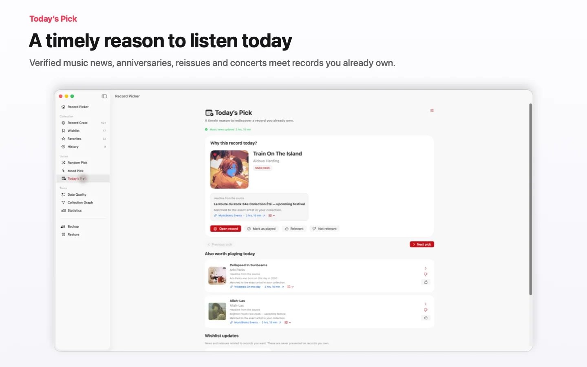

Record Picker
Record Picker 匯集了可自訂隨機選擇、Mood Pick、豐富的編目、iCloud、匯出、重複管理、32 種語言以及適用於 iPhone、iPad、Apple Watch 和 Mac 的本機應用程式。



井然有序的收藏
即使公共資料庫不夠完整，也能建立乾淨、可檢查、好瀏覽的收藏。
- 條碼掃描在 MusicBrainz 不認識參考時改用 Discogs，並在 Discogs 找到版本後自動預填表單。
- 來自 MusicBrainz 和 Discogs 的中繼資料
- 獨立於唱片箱的願望清單
- 重複偵測和資料品質檢查

封面與視覺資料
使用取得或自選的封面，讓收藏更易瀏覽、更賞心悅目。
- 透過 Cover Art Archive · iTunes Search · Deezer 查找封面
- 從照片或檔案手動匯入
- 缺少封面時進行網頁搜尋
- 還原原始封面
- 封面和視覺資料編輯

iPhone 橫向抽選
iPhone 橫向抽選
- 來自 MusicBrainz 和 Discogs 的中繼資料
- 統計

可自訂隨機選擇
在不失去控制的情況下選擇下一張唱片，讓隨機性持續推動收藏。
- 加權抽取優先考慮較少播放的唱片
- 依年份、類型、格式、轉速和收藏篩選
- 暫時排除，無需刪除
- 可瀏覽的歷史紀錄，了解哪些唱片常被抽到

氛圍與播放
按心情選擇並保留聆聽軌跡，讓收藏隨時間不斷被重新發現。
- 可用時使用 Apple 本機模型按氛圍挑選
- 模型不可用時基於中繼資料本機匹配
- 可用時使用裝置端 Apple Intelligence 產生敘述式統計
- 最近抽到或播放的唱片歷史
- 播放選項
Apple Watch 重新設計
封面作為模糊背景顯示，收藏、撤銷上一次抽取和下一次抽取按鈕都配有專屬觸覺回饋。
- 佈局適配 41 公釐至 Ultra
- 小幅打磨：iPad 封面選擇面板更平衡，iPhone-Watch 同步更快，App Store 評價請求更克制。
瀏覽與收藏洞察
無需離開 App 即可瀏覽、檢查並理解收藏，並為 iPhone 和 iPad 提供各自介面。
- 快速瀏覽唱片箱
- 獨立於唱片箱的願望清單
- 統一的 Liquid Glass 按鈕
- 清晰的 iPad 列表，並可從封面直接進入詳情
- 在真正有用的地方使用 iPad 拖放
- 重複偵測和資料品質檢查
- 來自 MusicBrainz 和 Discogs 的中繼資料
- 可瀏覽的歷史紀錄，了解哪些唱片常被抽到
無需折騰的 iCloud 同步
沒有第三方 AI 提供商，沒有雲端 AI；Apple Intelligence 留在裝置上
- 唱片箱、願望清單、已解決重複項、排除項、歷史、可復原刪除和自訂封面都會跟隨裝置同步。
- 封面和視覺資料編輯
- 用於試算表的 CSV 和清晰 JSON，唱片箱與願望清單分開
- 按需完整備份
- 網路評論絕不會被自動擷取
32 種語言
Record Picker 已支援 32 種語言，新增阿拉伯語、加泰隆尼亞語、韓語、丹麥語、澳洲/加拿大/英國英語、芬蘭語、加拿大法語、希伯來語、印地語、印尼語、挪威語、波蘭語、葡萄牙語、俄語、瑞典語和土耳其語。
- 阿拉伯語、希伯來語、印地語、日語、韓語、簡體中文和繁體中文
版本
v2.3在 Apple Watch 上的「Record Picker」中選取另一張音樂專輯。
即將推出
- 選擇一張音樂專輯 · Random Pick · 收藏夾
- 很少聽的音樂專輯 · 最近新增 · 古典 · 平靜的夜晚 · 精力充沛
- 離線 · 同步已排入佇列 · 正在同步 · 已是最新
- 在 Apple Watch 上玩 · 播放開始 · 聽過
- 今日精選會把可靠的音樂新聞與你擁有的唱片連結起來，並說明它為何值得今天聆聽。
v2.2Record Picker 2.2 讓收藏的匯入、編目與重新發現更加準確。
iPhone · iPad · Mac · Apple Watch · 現已推出
- CSV 匯入現在明確區分收藏與願望清單，支援自訂欄位對應，並提供詳細的結果摘要。
- 藝術家、曲風和廠牌建議以及偏好的實體格式，可在不覆寫自有中繼資料的情況下加快手動輸入。
- 曲風排序與多曲風篩選讓瀏覽更輕鬆，並提升 Random Pick 和 Mood Pick 的精準度。
- 今日唱片 會顯示更可靠的來源、時效和依據，並透過相關或不相關回饋改善後續建議。
- 可靠性、輔助使用和本地化改善，讓 iPhone、iPad 和 Mac 上的大型收藏保持流暢與私密。
iOS 2.1.1 · macOS 2.2Record Picker 讓初次使用更順暢，日常體驗更可靠。
- 更穩健地匯入 Discogs CSV，包括不完整或含多行文字的匯出檔案。
- 為 Random Pick、Mood Pick、今日唱片、備份和設定提供輕量且可重設的說明。
- 在支援的裝置上，Apple Intelligence 可於裝置端私密產生統計分析；切換至本機分析時，App 會清楚說明原因。
- Mood Pick 和 今日唱片 的封面載入更快，並改善 iPhone、iPad 和 Mac 版面。
- 備份、還原和清除資料更加安全，同時修正多項翻譯和易用性問題。
你的收藏始終保持私密並由你掌控。
v1.9Record Picker 1.9 推出「今日精選」：以切合當下且保障私隱的理由，重新發現你已擁有的唱片。
- 經核實的音樂新聞、重要紀念日及可選的附近演出，只會在你的裝置上與收藏配對。
- 每項建議都會解釋入選原因並列出附日期的來源。願望清單資訊與可播放的自有唱片保持分開。
- 可選的私人提醒、相關性回饋及 Apple Watch 上的「今日精選」讓建議保持實用。你的收藏絕不會傳送至新聞服務。
Record Picker ≤ 1.8
v1.8Record Picker 1.8 讓 iPhone、iPad、Apple Watch 和 Mac 使用統一的版本體系。
- 支援更多實體載體：黑膠、CD、SACD、混合 SACD、MiniDisc、卡帶、DVD-Audio、Blu-ray Audio 和 78 轉唱片。
- 新增完整的古典音樂欄位：作品、目錄號、指揮、樂團、組合、獨奏家、錄音日期和地點。
- CSV 匯入和匯出現在使用更清楚的「載體格式」欄位，同時相容舊版 Record Picker 檔案。
- 進一步提高了備份、收藏、封面、匯入和元資料修復的可靠性。
- 區分 App 可安全完成的修正與需要你決定的選項，並顯示每項建議的來源和可信度。
- 並排比較 MusicBrainz 與 Discogs 的衝突。修復佇列可繼續執行，並支援 CSV 報告和還原。
- 新增四步驟入門指南，介紹匯入、資料品質、Random Pick、Mood Pick 和 Free/Pro。
- 唱片詳細資料會優先顯示最初發行年份，同時保留所藏版本的準確年份。
v1.6Record Picker 免費，終身 Pro 和原生 Mac 應用程序
- Record Picker 現在可免費收集最多 100 條記錄；一次性購買 Pro 版即可解鎖 iPhone、iPad 和 Mac 上的無限收藏，無需訂閱。
- 新的原生 Mac 應用程式將大螢幕變成一個命令中心，用於瀏覽、豐富、清理和重新發現收藏。
- iCloud 同步的反應速度更快，其狀態現在可以在專用的同步中心中查看。
- CSV 匯入現在可以保護現有的收藏夾；您也可以僅從較早的備份還原收藏夾，而無需替換當前收藏夾。
- 重複偵測速度更快，評論選擇更好，評論關鍵字重新索引現在顯示出明顯的進展。
- 清晰的儲存診斷報告問題，而不是使錯誤看起來像資料遺失。
- iPhone、iPad 和 Apple Watch 之間的 iCloud 同步更加可靠。
- 現在，在手動或條碼輸入後會自動添加藝術品，並具有更強大的後備功能。
- 改進的數據品質工具、重複管理和批判性評論獲取。
v1.4透過可自訂隨機選擇、重新設計的 Apple Watch、清晰唱片箱、32 種語言和面向收藏者的匯入/匯出工具重新發現音樂收藏。
- iPhone 橫向抽選
- 可瀏覽的歷史紀錄，了解哪些唱片常被抽到
- 獨立於唱片箱的願望清單
- 統計
- 小幅打磨：iPad 封面選擇面板更平衡，iPhone-Watch 同步更快，App Store 評價請求更克制。
v1.3Apple Watch 重新設計、Discogs 備援查詢和 32 種語言
- 封面作為模糊背景顯示，收藏、撤銷上一次抽取和下一次抽取按鈕都配有專屬觸覺回饋。
- 佈局適配 41 公釐至 Ultra
- 條碼掃描在 MusicBrainz 不認識參考時改用 Discogs，並在 Discogs 找到版本後自動預填表單。
- Record Picker 已支援 32 種語言，新增阿拉伯語、加泰隆尼亞語、韓語、丹麥語、澳洲/加拿大/英國英語、芬蘭語、加拿大法語、希伯來語、印地語、印尼語、挪威語、波蘭語、葡萄牙語、俄語、瑞典語和土耳其語。
- 小幅打磨：iPad 封面選擇面板更平衡，iPhone-Watch 同步更快，App Store 評價請求更克制。
v1.2目錄、智慧選擇和 Apple Watch 伴侶
- 完整音樂目錄，支援匯入、手動新增專輯與條碼掃描。
- 動畫隨機挑選、年份篩選、收藏、臨時排除、聆聽歷史與收藏統計。
- 可用時用 Apple 本機模型按氛圍挑選，否則基於收藏中繼資料在裝置端匹配。
- MusicBrainz 中繼資料、Cover Art Archive 或手動封面、備份/還原、Siri 捷徑與 Apple Watch。
- 收藏保持本機儲存；中繼資料與封面查詢僅在使用者啟動時進行。
- 優化介面與內部基礎，帶來更流暢的體驗。
- 改進 iPad 支援。
- 更好利用評論的氛圍挑選。
- 資料品質：唱片詳情、手動刪除列、Discogs/MusicBrainz 搜尋。
- 缺失曲目：先搜尋 MusicBrainz，再搜尋 Discogs。